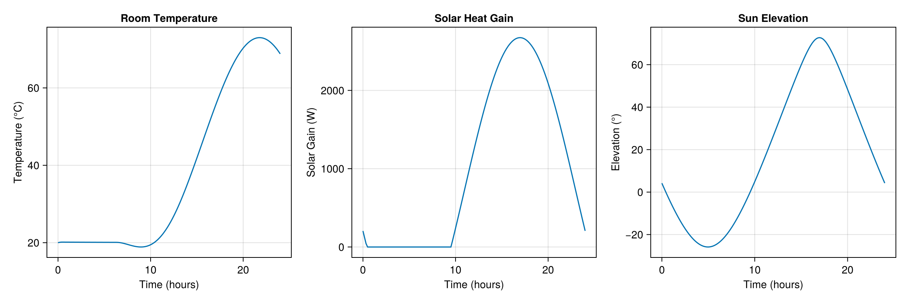
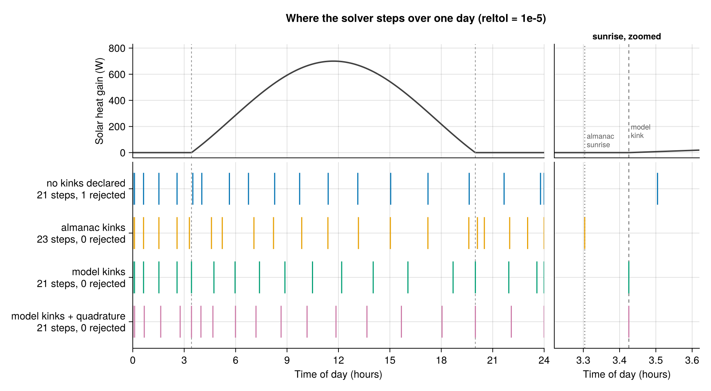

Building models with ModelingToolkit.jl
SolarPosition.jl provides a ModelingToolkit.jl extension that enables integration of solar position calculations into symbolic modeling workflows. This allows you to compose solar position components with other physical systems for applications like solar energy modeling, building thermal analysis, and solar tracking systems.
Installation
The ModelingToolkit extension is loaded automatically when both SolarPosition.jl and ModelingToolkit.jl are loaded:
using SolarPositionusing ModelingToolkitQuick Start
The extension provides the SolarPositionBlock component, which outputs solar azimuth, elevation, and zenith angles as time-varying quantities.
using SolarPositionusing ModelingToolkitusing ModelingToolkit: t_nounits as tusing Datesusing OrdinaryDiffEq# Create a solar position block@named sun = SolarPositionBlock()# Define observer location and reference timeobs = Observer(51.50274937708521, -0.17782150375214803, 15.0) # Natural History Museumt0 = DateTime(2024, 6, 21, 12, 0, 0) # Summer solstice noon# Compile the systemsys = mtkcompile(sun)# Set parameters using the compiled system's parameter referencespmap = [ sys.observer => obs, sys.t0 => t0, sys.algorithm => PSA(), sys.refraction => NoRefraction(),]# Solve over 24 hours (time in seconds)tspan = (0.0, 86400.0)prob = ODEProblem(sys, pmap, tspan)sol = solve(prob; saveat = 3600.0) # Save every hour# Show some resultsprintln("Solar position at noon (t=12 hours):")println(" Azimuth: ", round(sol[sys.azimuth][1], digits=2), "°")println(" Elevation: ", round(sol[sys.elevation][1], digits=2), "°")println(" Zenith: ", round(sol[sys.zenith][1], digits=2), "°")Solar position at noon (t=12 hours):
Azimuth: 178.72°
Elevation: 61.93°
Zenith: 28.07°SolarPositionBlock
The SolarPositionBlock is a ModelingToolkit.jl component that computes solar position angles based on time, observer location, and chosen positioning and refraction algorithms.
SolarPosition.SolarPositionBlock — Function
SolarPositionBlockReturn a ModelingToolkit.jl component that computes solar position as a function of time and can be integrated into symbolic modeling workflows.
The SolarPositionBlock is a System which exposes azimuth, elevation, and zenith as output variables computed from the simulation time t (in seconds) relative to a reference time t0.
This function requires ModelingToolkit.jl to be loaded. The extension is automatically loaded when both SolarPosition.jl and ModelingToolkit.jl are available.
Parameters
observer::Observer: location (latitude, longitude, altitude). SeeObservert0::DateTime: Reference time (time when simulation timet = 0)algorithm::SolarAlgorithm: Solar positioning algorithm (default:PSA)refraction::RefractionAlgorithm: Atmospheric refraction correction (default:NoRefraction)
Variables (Outputs)
azimuth(t): Solar azimuth angle in degrees (0° = North, 90° = East, 180° = South, 270° = West)elevation(t): Solar elevation angle in degrees (angle above horizon, positive when sun is visible)zenith(t): Solar zenith angle in degrees (angle from vertical, complementary to elevation:zenith = 90° - elevation)
Time Convention
The simulation time t (accessed via t_nounits) is in seconds from the reference time t0. For example:
t = 0corresponds tot0t = 3600corresponds tot0 + 1 hourt = 86400corresponds tot0 + 24 hours
Example
using SolarPosition, ModelingToolkitusing ModelingToolkit: t_nounits as t, @named, mtkcompileusing Datesusing OrdinaryDiffEq: ODEProblem, solve@named sun = SolarPositionBlock()obs = Observer(51.5, -0.18, 15.0)t0 = DateTime(2024, 6, 21, 12, 0, 0)sys = mtkcompile(sun)pmap = [ sys.observer => obs, sys.t0 => t0, sys.algorithm => PSA(), sys.refraction => NoRefraction(),]prob = ODEProblem(sys, pmap, (0.0, 86400.0))sol = solve(prob; saveat = 3600.0)Composing with Other Systems
The real power of the ModelingToolkit extension comes from composing solar position with other physical systems.
Example: Solar Panel Power Model
using CairoMakie: Figure, Axis, lines!# Create solar position block@named sun = SolarPositionBlock()# Create a simple solar panel model@parameters begin area = 10.0 # Panel area (m²) efficiency = 0.2 # Panel efficiency (20%) dni_peak = 1000.0 # Peak direct normal irradiance (W/m²)end@variables begin irradiance(t) = 0.0 # Effective irradiance on panel (W/m²) power(t) = 0.0 # Power output (W)end# Simplified model: irradiance depends on sun elevation# In reality, you'd account for panel orientation, azimuth, etc.eqs = [ irradiance ~ dni_peak * max(0, sind(sun.elevation)), power ~ area * efficiency * irradiance,]# Compose the complete system@named model = System(eqs, t; systems = [sun])sys_model = mtkcompile(model)# Set up and solveobs = Observer(37.7749, -122.4194, 100.0)t0 = DateTime(2024, 6, 21, 0, 0, 0)pmap = [ sys_model.sun.observer => obs, sys_model.sun.t0 => t0, sys_model.sun.algorithm => PSA(), sys_model.sun.refraction => NoRefraction(),]prob = ODEProblem(sys_model, pmap, (0.0, 86400.0))sol = solve(prob; saveat = 600.0) # Save every 10 minutes# Plot resultsfig = Figure(size = (1000, 400))ax1 = Axis(fig[1, 1]; xlabel = "Time (hours)", ylabel = "Elevation (°)", title = "Solar Elevation")lines!(ax1, sol.t ./ 3600, sol[sys_model.sun.elevation])ax2 = Axis(fig[1, 2]; xlabel = "Time (hours)", ylabel = "Power (W)", title = "Solar Panel Power")lines!(ax2, sol.t ./ 3600, sol[sys_model.power])fig
Example: Building Thermal Model with Solar Gain
using CairoMakie: Figure, Axis, lines!using ModelingToolkit: D_nounits as D# Solar position component@named sun = SolarPositionBlock()# Building thermal model with solar gain@parameters begin mass = 1000.0 # Thermal mass (kg) cp = 1000.0 # Specific heat capacity (J/(kg·K)) U = 0.5 # Overall heat transfer coefficient (W/(m²·K)) wall_area = 50.0 # Wall area (m²) window_area = 5.0 # Window area (m²) window_trans = 0.7 # Window transmittance T_outside = 20.0 # Outside temperature (°C) dni_peak = 800.0 # Peak solar irradiance (W/m²)end@variables begin T(t) = 20.0 # Room temperature (°C) Q_loss(t) # Heat loss through walls (W) Q_solar(t) # Solar heat gain (W) irradiance(t) # Solar irradiance (W/m²)endeqs = [ # Solar irradiance based on sun elevation irradiance ~ dni_peak * max(0, sind(sun.elevation)), # Solar heat gain through windows Q_solar ~ window_area * window_trans * irradiance, # Heat loss through walls Q_loss ~ U * wall_area * (T - T_outside), # Energy balance D(T) ~ (Q_solar - Q_loss) / (mass * cp),]@named building = System(eqs, t; systems = [sun])sys_building = mtkcompile(building)# Simulateobs = Observer(40.7128, -74.0060, 100.0) # New York Cityt0 = DateTime(2024, 6, 21, 0, 0, 0)pmap = [ sys_building.sun.observer => obs, sys_building.sun.t0 => t0, sys_building.sun.algorithm => PSA(), sys_building.sun.refraction => NoRefraction(),]prob = ODEProblem(sys_building, pmap, (0.0, 86400.0))sol = solve(prob; saveat = 600.0)# Plot temperature evolutionfig = Figure(size = (1200, 400))ax1 = Axis(fig[1, 1]; xlabel = "Time (hours)", ylabel = "Temperature (°C)", title = "Room Temperature")lines!(ax1, sol.t ./ 3600, sol[sys_building.T])ax2 = Axis(fig[1, 2]; xlabel = "Time (hours)", ylabel = "Solar Gain (W)", title = "Solar Heat Gain")lines!(ax2, sol.t ./ 3600, sol[sys_building.Q_solar])ax3 = Axis(fig[1, 3]; xlabel = "Time (hours)", ylabel = "Elevation (°)", title = "Sun Elevation")lines!(ax3, sol.t ./ 3600, sol[sys_building.sun.elevation])fig
High Accuracy Forcing with Interpolated
The default PSA is fast but carries its ±0.0083° accuracy. Passing SPA gives ±0.0003° at about 2 µs per evaluation, which the solver pays at every stage of every step. The Interpolated wrapper keeps SPA accuracy at close to PSA cost, which makes it the right choice when a model needs the best available forcing. Load Interpolations.jl, build the interpolant to cover the simulation window with some margin, and pass it like any other algorithm:
using Interpolationst0 = DateTime(2024, 6, 21, 0, 0, 0)interp = Interpolated( SPA(); tspan = (t0 - Day(1), t0 + Day(2)), out_of_range = :fallback,)@named sun = SolarPositionBlock()sys = mtkcompile(sun)pmap = [ sys.observer => Observer(37.7749, -122.4194, 100.0), sys.t0 => t0, sys.algorithm => interp, sys.refraction => NoRefraction(),]prob = ODEProblem(sys, pmap, (0.0, 86400.0))sol = solve(prob; saveat = 3600.0)# identical model with direct SPA for comparisonpmap_spa = [pmap[1], pmap[2], sys.algorithm => SPA(), pmap[4]]sol_spa = solve(ODEProblem(sys, pmap_spa, (0.0, 86400.0)); saveat = 3600.0)maximum(abs.(sol[sys.elevation] .- sol_spa[sys.elevation]))1.0018652574217413e-12Two practical notes. First, size tspan to cover the whole solve measured from t0 and pad it generously, since construction costs milliseconds and a few hundred kilobytes per year. Second, out_of_range = :fallback is a good idea inside a solver, because a stray evaluation outside the span then degrades to exact SPA instead of aborting the integration. The interpolant is observer independent and immutable, so one instance can be shared by every SolarPositionBlock in a model and across threads.
Working with the Solver
Two properties of solar forcing surprise people the first time: the solver seems to skip straight past the day unless saveat is given, and the adaptive error control seems unaware of the sun. Both have clean solutions.
Sampling outputs without saveat
saveat does not make the solver take more steps. Save points are filled in from the solution's dense interpolant, so it only controls what gets recorded. For the bare SolarPositionBlock the compiled system has no differential states at all, so the solver correctly jumps from start to end in one step, and without saveat the solution object holds just the two endpoints.
obs = Observer(52.35888, 4.88185, 100.0)t0 = DateTime(2024, 6, 21, 0, 0, 0)@named sun = SolarPositionBlock()sys = mtkcompile(sun)pmap = [ sys.observer => obs, sys.t0 => t0, sys.algorithm => PSA(), sys.refraction => NoRefraction(),]sol = solve(ODEProblem(sys, pmap, (0.0, 86400.0)))length(sol.t)2The better tool is the solution object itself. The solar outputs are observed variables that depend only on parameters and time, so querying the solution re-evaluates the exact solar position at any requested time, at any resolution, independent of how coarsely the solver stepped:
sol(0.0:600.0:86400.0; idxs = sys.elevation)t: 0.0:600.0:86400.0
u: 145-element Vector{Float64}:
-14.10625117899734
-13.963423458546238
-13.758238490846391
-13.49124812595513
-13.16316216317433
-12.77484023712839
-12.327282267363698
-11.821617727127352
-11.259094005594104
-10.64106414485612
⋮
-12.98873741198058
-13.34582263552447
-13.642202999708623
-13.877095700539487
-14.049872212903589
-14.160065566650013
-14.207375858310284
-14.19167383877931
-14.11300247120723This is exact for the sun angles. For observed variables that also involve states the query uses the state interpolant, whose accuracy is set by the solver tolerances.
Making the error controller see the forcing
The embedded error estimator only controls the error of integrating the states it is given. Two distinct failure modes follow, each with its own fix.
The first is nonsmoothness. Solar forcing models clip at the horizon with max(0, ...), and a step spanning sunrise or sunset hits a kink and rejects. d_discontinuities fixes that, but only with the times the model actually breaks at. transit_sunrise_sunset returns the almanac event, when the sun's upper limb reaches −0.8333° with refraction allowed for, whereas max(0, sind(elevation)) breaks when the geometric elevation crosses zero. In Amsterdam at the solstice the two are seven minutes apart, so the declared discontinuity lands where nothing happens. The almanac event brackets the geometric one, so bisect inside it:
events = transit_sunrise_sunset(obs, t0)almanac = [Dates.value(dt - t0) / 1000 for dt in (events.sunrise, events.sunset)]function elevation_root(lo, hi) elevation(x) = solar_position( obs, t0 + Millisecond(round(Int, 1000x)), PSA(), NoRefraction() ).elevation for _ in 1:60 mid = (lo + hi) / 2 elevation(lo) * elevation(mid) <= 0 ? (hi = mid) : (lo = mid) end return (lo + hi) / 2endkinks = [elevation_root(a - 1800, a + 1800) for a in almanac](kinks .- almanac) ./ 60 # minutes from the almanac event to the model's kink2-element Vector{Float64}:
7.295175000000017
-7.284441666666923The second failure mode is smooth blindness. A state with a large time constant filters the forcing, so the controller sees little state error and under resolves the forcing's integral. Adding that integral as a state, here E_sol, puts its quadrature into the error budget. A vector abstol matched to unknowns(sys) then scales the tolerance to physical units, since the default 1e-6 on a joule count reaching 2.5e7 is far tighter than the problem needs:
@parameters C = 5.0e5 k = 25.0@variables T_room(t) = 18.0 E_sol(t) = 0.0 Q(t)eqs = [ Q ~ 800 * max(0, sind(sun.elevation)), D(T_room) ~ (Q - k * (T_room - 15.0)) / C, D(E_sol) ~ Q,]@named house = System(eqs, t; systems = [sun])sys = mtkcompile(house)pmap = [ sys.sun.observer => obs, sys.sun.t0 => t0, sys.sun.algorithm => PSA(), sys.sun.refraction => NoRefraction(),]prob = ODEProblem(sys, pmap, (0.0, 86400.0))abstol = [isequal(u, E_sol) ? 1.0e-1 : 1.0e-6 for u in unknowns(sys)]sol = solve(prob; d_discontinuities = kinks, reltol = 1.0e-5, abstol)(steps = length(sol.t), rejected = sol.stats.nreject, daily_insolation = sol[sys.E_sol][end])(steps = 21, rejected = 0, daily_insolation = 2.5219739762471996e7)Where the solver put its steps says more than a step count does. A loose reltol of 1e-5 keeps a day to a countable number of steps, so each can be drawn as a vertical line under the forcing. The first three rows vary only the declared kink times; the fourth adds the quadrature state to the best of them:
using CairoMakie: Figure, Axis, Label, Point2f, RGBf, Relative, colgap!, colsize!, hidespines!, hidexdecorations!, hideydecorations!, linesegments!, lines!, rowgap!, rowsize!, text!, vlines!# the same house without the quadrature state, for comparison@named house_filtered = System(eqs[1:2], t; systems = [sun])sys_f = mtkcompile(house_filtered)prob_f = ODEProblem( sys_f, [ sys_f.sun.observer => obs, sys_f.sun.t0 => t0, sys_f.sun.algorithm => PSA(), sys_f.sun.refraction => NoRefraction(), ], (0.0, 86400.0),)variants = [ ("no kinks declared", solve(prob_f; reltol = 1.0e-5), RGBf(0, 0.447, 0.698)), ( "almanac kinks", solve(prob_f; d_discontinuities = almanac, reltol = 1.0e-5), RGBf(0.902, 0.624, 0), ), ( "model kinks", solve(prob_f; d_discontinuities = kinks, reltol = 1.0e-5), RGBf(0, 0.62, 0.451), ), ("model kinks + quadrature", sol, RGBf(0.8, 0.475, 0.655)),]ts = range(0, 86400; length = 3000)Qs = collect(sol(ts; idxs = sys.Q))rug!(ax, y, s, c) = linesegments!( ax, [Point2f(x / 3600, y + dy) for x in s.t for dy in (-0.36, 0.36)]; color = c, linewidth = 1.5,)fig = Figure(size = (980, 540))zoom = (3.22, 3.62) # a window around sunriseax_day = Axis(fig[1, 1]; ylabel = "Solar heat gain (W)")ax_rug = Axis( fig[2, 1]; xlabel = "Time of day (hours)", xticks = 0:3:24, yticks = ( 1:4, [ "$n\n$(length(s.t)) steps, $(s.stats.nreject) rejected" for (n, s, _) in reverse(variants) ], ),)ax_zoom = Axis(fig[1, 2]; title = "sunrise, zoomed", titlesize = 12)ax_zoomrug = Axis(fig[2, 2]; xlabel = "Time of day (hours)", xticks = 3.3:0.1:3.6)for ax in (ax_day, ax_zoom) lines!(ax, ts ./ 3600, Qs; color = :grey25, linewidth = 2) hidexdecorations!(ax; grid = false)endfor ax in (ax_day, ax_rug) vlines!(ax, kinks ./ 3600; color = :grey55, linestyle = :dash, linewidth = 1)endfor ax in (ax_zoom, ax_zoomrug) vlines!(ax, almanac[1] / 3600; color = :grey55, linestyle = :dot, linewidth = 1.5) vlines!(ax, kinks[1] / 3600; color = :grey55, linestyle = :dash, linewidth = 1.5) hideydecorations!(ax; grid = false)endfor (y, (_, s, c)) in zip(4:-1:1, variants) rug!(ax_rug, y, s, c) rug!(ax_zoomrug, y, s, c)endtext!( ax_zoom, almanac[1] / 3600, 30; text = " almanac\n sunrise", align = (:left, :bottom), fontsize = 10, color = :grey35,)text!( ax_zoom, kinks[1] / 3600, 100; text = " model\n kink", align = (:left, :bottom), fontsize = 10, color = :grey35,)ax_day.limits = ((0, 24), (-40, 830))ax_rug.limits = ((0, 24), (0.4, 4.6))ax_zoom.limits = (zoom, (-40, 830))ax_zoomrug.limits = (zoom, (0.4, 4.6))for ax in (ax_day, ax_rug, ax_zoom, ax_zoomrug) hidespines!(ax, :t, :r)endLabel( fig[0, 1:2], "Where the solver steps over one day (reltol = 1e-5)"; fontsize = 15, font = :bold, padding = (0, 0, 4, 0),)rowsize!(fig.layout, 1, Relative(0.36))colsize!(fig.layout, 2, Relative(0.26))rowgap!(fig.layout, 6)colgap!(fig.layout, 14)fig
The top row declares nothing and steps across the day at near constant spacing, indifferent to whether the sun is up. The second declares the almanac times, and the zoom shows why that barely helps: the dotted line sits where the forcing is still flat, so the step is spent on a discontinuity that is not there and the real kink at the dashed line is met unprepared. The third lands a step exactly on the break. The fourth changes the sampling very little.
Against a reltol = 1e-13 reference, where the error columns are the largest room temperature deviation over the day and the relative error in daily insolation:
| variant | steps | rejected | f evals | max ΔT_room | rel. err. insolation |
|---|---|---|---|---|---|
| no kinks declared | 21 | 1 | 129 | 1.7e-2 K | — |
| almanac kinks | 23 | 0 | 137 | 7.7e-3 K | — |
| model kinks | 21 | 0 | 125 | 1.4e-4 K | — |
| model kinks + quadrature | 21 | 0 | 125 | 7.0e-5 K | 4.3e-8 |
Almost all of the benefit comes from one change. Bisecting for the model's own kink times buys a factor of 125 on the temperature and costs slightly less than declaring nothing, since the rejections it avoids more than pay for the two steps it forces. The almanac times alone buy a factor of two.
The quadrature state does less than it appears to. T_room was never the under resolved state, so it gains only a factor of two; what the extra state controls is E_sol, and it earns its keep only when the integrand depends on a state. Here Q depends on time and parameters alone, so the dense output evaluates it exactly and a trapezoid rule over the filtered solve reaches 1.1e-5 relative error at a hundred query points and 2.4e-7 at a thousand, for no solver cost. Add the state when the integral feeds back into the dynamics; post-process when it does not.
Whatever you settle on, verify it once against a reference solve at reltol = 1e-10. That check, not the step count, is what shows the recipe is sufficient.
Implementation Details
The extension works by registering the solar_position function and helper functions as symbolic operations in ModelingToolkit. The actual solar position calculation happens during ODE solving, with the simulation time t being converted to a DateTime relative to the reference time t0.
Limitations
The solar position calculation is treated as a black-box function by MTK's symbolic engine, so its internals cannot be symbolically simplified.
See Also
- Solar Positioning - Available positioning algorithms
- Refraction Correction - Atmospheric refraction methods
- ModelingToolkit.jl Documentation - MTK framework documentation